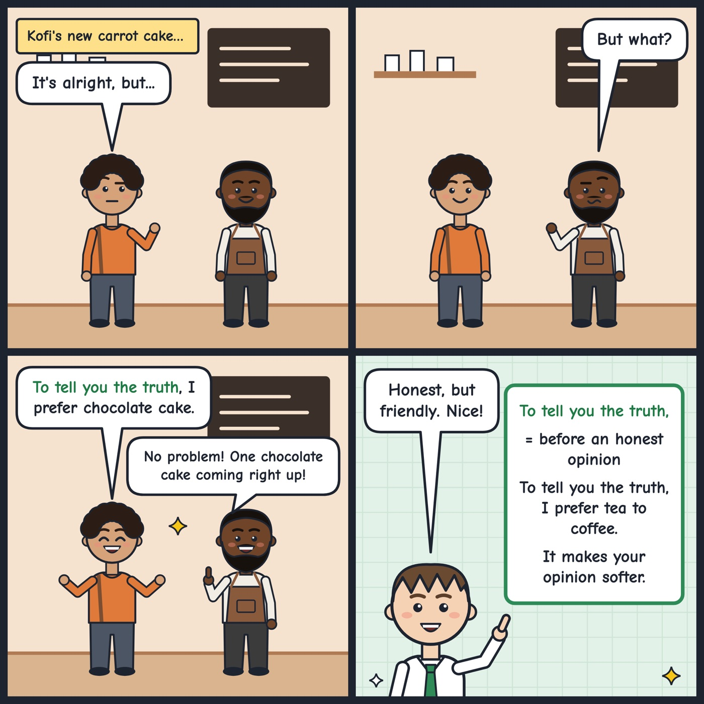

to tell you the truth
A phrase you use before saying something honest, especially when it may be a little surprising.
To tell you the truth, I prefer tea to coffee.
Tip: Put it at the start of a sentence and follow it with a comma; it often introduces an opinion or a fact the other person may not expect, so keep your tone friendly.
Hear it in conversation
Workbook
1. What does it mean?
In this conversation, what does "to tell you the truth" mean?
2. Fill the gap
, I didn't really enjoy the party last night, so I left early.
3. Choose the best reply
Olena: Do you like the new design for our team's website?
4. Your turn: speak
Tell me about a type of food you didn't like at first but enjoy now.
Show an example answer
To tell you the truth, I couldn't stand mushrooms when I was a kid because of the texture. But a friend cooked them with garlic and butter a few years ago, and now I order them all the time.
Answer key: to tell you the truth
- 1. A. I am going to say something honest that may surprise you.
- 2. To tell you the truth
- 3. B. To tell you the truth, the menu is a bit confusing for me.
- 4. Example: To tell you the truth, I couldn't stand mushrooms when I was a kid because of the texture. But a friend cooked them with garlic and butter a few years ago, and now I order them all the time.
See it in a comic
